Chang Xu
PhD Student · ECEO Lab, EPFL, Switzerland
I am a PhD student (2024–) at the ECEO Lab, EPFL, supervised by Prof. Devis Tuia (EPFL) and Prof. Sebastian Schemm (University of Cambridge).
During the PhD, my research focuses on reconstructing high-resolution Earth system dynamics with physical consistency, to benefit applications such as a reliable forecasting of extreme weather events.
Prior to EPFL, I received both my B.Sc. and M.Sc. degrees from the Electronic Information School, Wuhan University, under the supervision of Prof. Wen Yang, where I worked on object detection and localization with a focus on tiny object detection.
Recent News
2026
2025
2024
2023
May 2023
Award
Best Presentation Award at ICDIP 2023.
Apr 2023
EPFL
Starting a summer internship at EPFL.
Mar 2023
CVPR
Oriented Tiny Object Detection accepted at CVPR 2023.
2022
2021
Selected Publications
* Equal Contribution · # Corresponding Author
Earth System Modeling
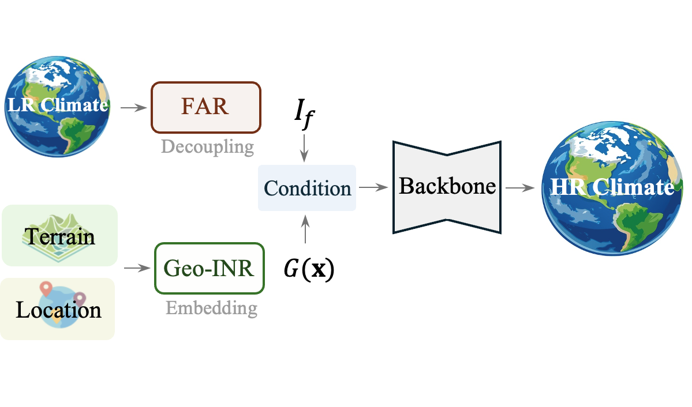
GeoFAR: Geography-Informed Frequency-Aware Super-Resolution for Climate Data
Chang Xu#, Gencer Sumbul, Li Mi, Robin Zbinden, Devis Tuia
ICLR 2026
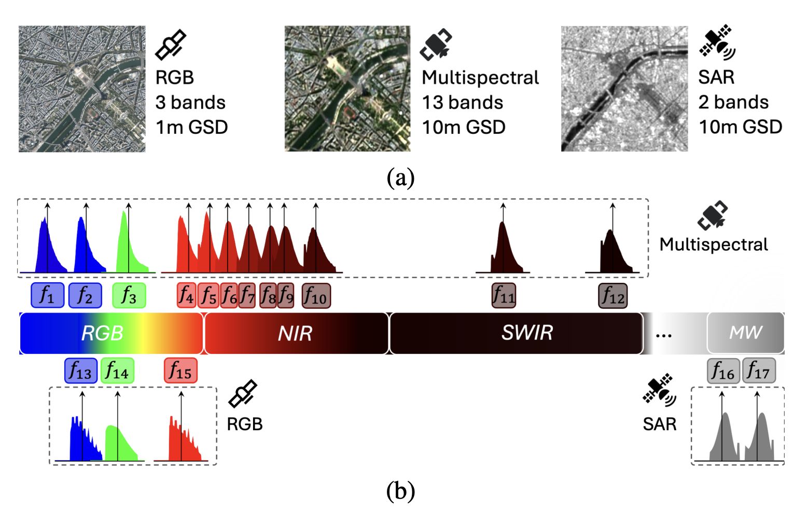
SMARTIES: Spectrum-Aware Multi-Sensor Auto-Encoder for Remote Sensing Images
Gencer Sumbul, Chang Xu, Emanuele Dalsasso, Devis Tuia
ICCV 2025
Small Object Detection
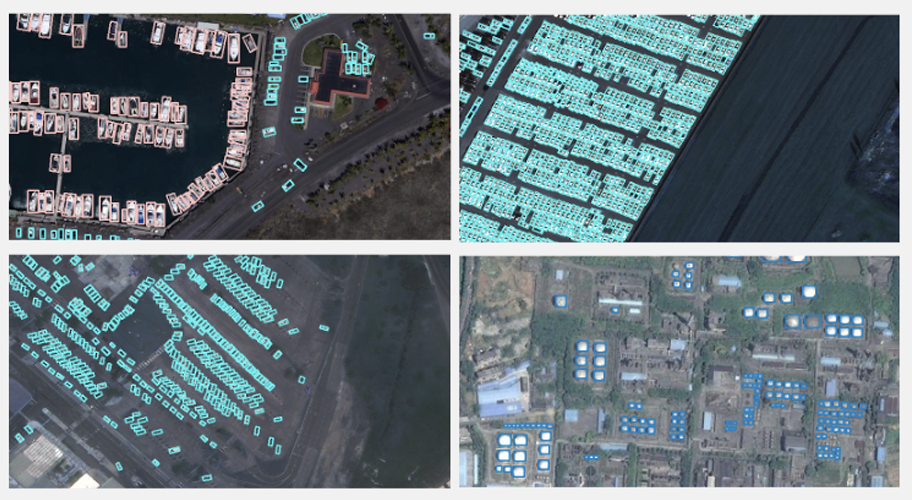
Oriented Tiny Object Detection: A Dataset, Benchmark, and Dynamic Unbiased Learning
Chang Xu, Ruixiang Zhang, Wen Yang#, Haoran Zhu, Fang Xu, Jian Ding, Gui-song Xia
IEEE TPAMI 2025
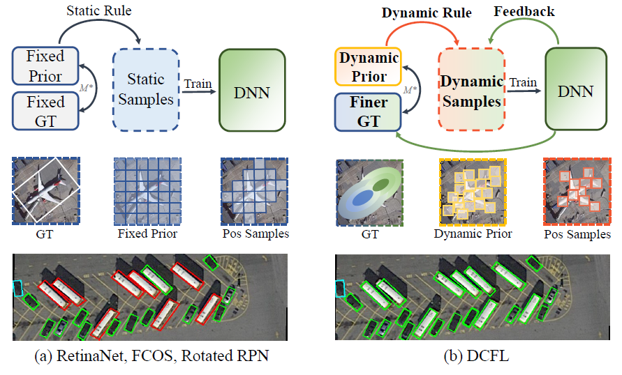
Dynamic Coarse-to-Fine Learning for Oriented Tiny Object Detection
Chang Xu, Jian Ding, Jinwang Wang, Wen Yang#, Huai Yu, Lei Yu#, Gui-song Xia
CVPR 2023
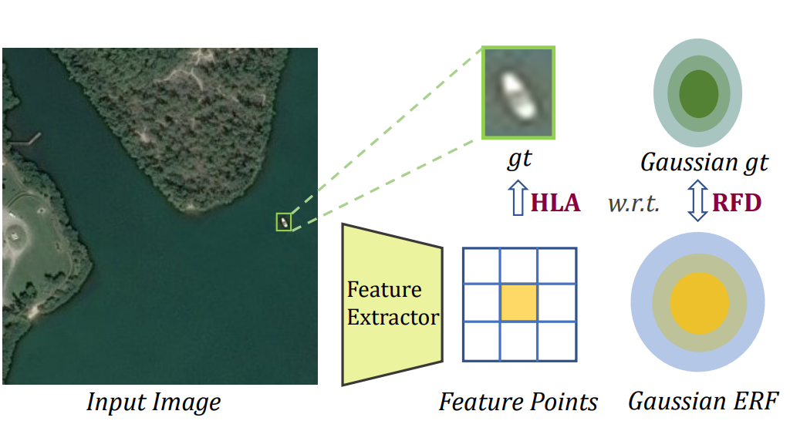
RFLA: Gaussian Receptive Field based Label Assignment for Tiny Object Detection
Chang Xu, Jinwang Wang, Wen Yang#, Huai Yu, Lei Yu, Gui-song Xia
ECCV 2022
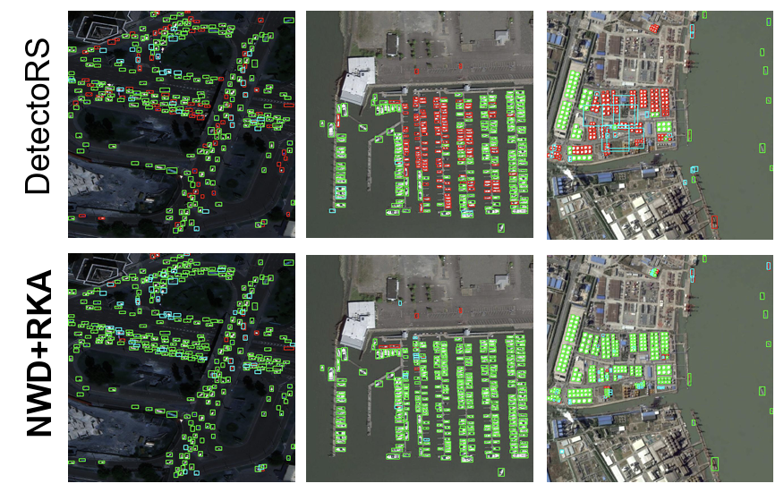
Detecting Tiny Objects in Aerial Images: A Normalized Wasserstein Distance and A New Benchmark
Chang Xu*, Jinwang Wang*, Wen Yang#, Huai Yu, Lei Yu, Gui-song Xia
ISPRS JPRS 2022 · Top-5 cited since 2022
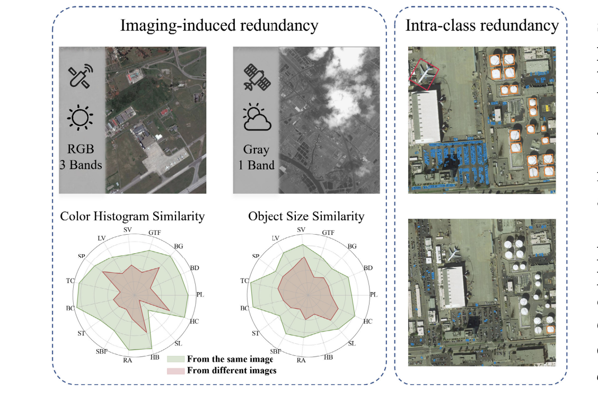
Minimizing Sample Redundancy for Label-efficient Object Detection in Aerial Images
Ruixiang Zhang*, Chang Xu*, Haoran Zhu, Fang Xu, Wen Yang#, Haijian Zhang, Gui-Song Xia
IEEE TGRS 2025
Multi-modal & Cross-modal Learning
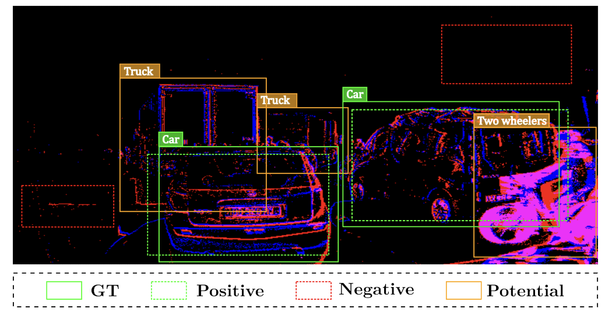
Detecting Every Object from Events
Haitian Zhang, Chang Xu, Xinya Wang, Bingde Liu, Guang Hua, Lei Yu, Wen Yang#
IEEE TPAMI 2025
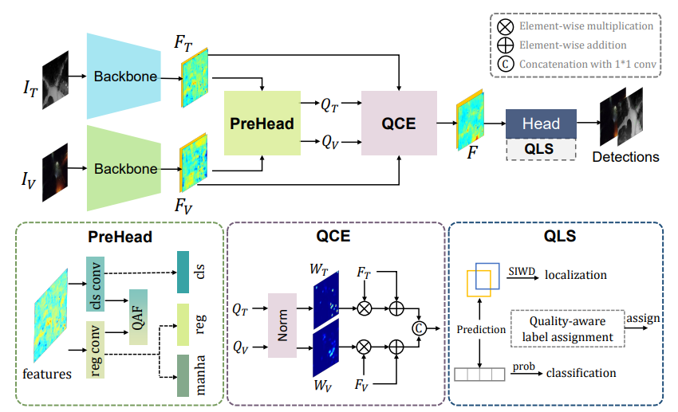
Drone-based RGBT Tiny Person Detection
Yan Zhang*, Chang Xu*, Wen Yang#, Guangjun He, Huai Yu, Lei Yu, Gui-song Xia
ISPRS JPRS 2023
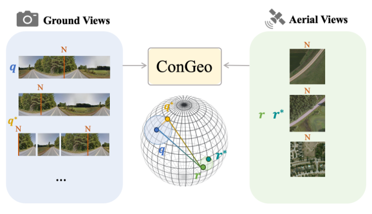
ConGeo: Robust Cross-view Geo-localization across Ground View Variations
Li Mi*, Chang Xu*,#, Javiera Castillo-Navarro, Syrielle Montariol, Wen Yang, Antoine Bosselut, Devis Tuia
ECCV 2024
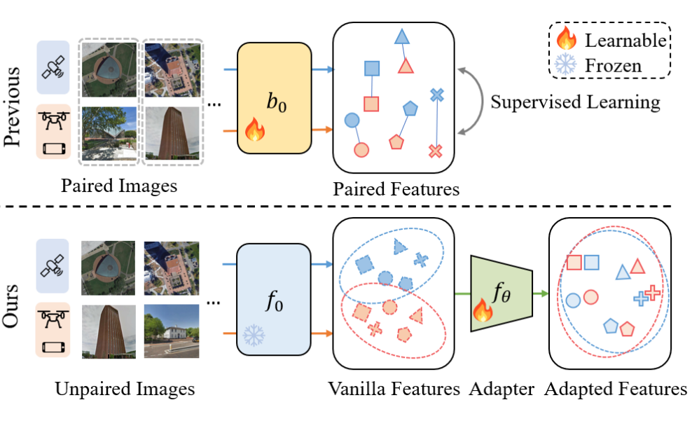
Learning Cross-view Visual Geo-localization without Ground Truth
Haoyuan Li, Chang Xu, Wen Yang#, Huai Yu, Gui-Song Xia
IEEE TGRS 2024
Education
2024 –
EPFL, Switzerland
PhD Student, Environmental Computational Science and Earth Observation (ECEO)
2023
EPFL, Switzerland
Exchange Master Student
2021 – 2024
Wuhan University, China
M.Sc. in Information and Communication Engineering
2020
University of Oxford, UK
Visiting Student
2017 – 2021
Wuhan University, China
B.Sc. in Electronic Information Engineering
Awards & Honors
2023
Best Presentation Award
ICDIP 2023
2021
Outstanding Graduate Thesis
Top 5% · Wuhan University
2020
Hubei Translation Final Contest
Second Prize · Hubei, China
2019
National Undergraduate Electronic Design Contest (Hubei)
First Prize · Hubei, China